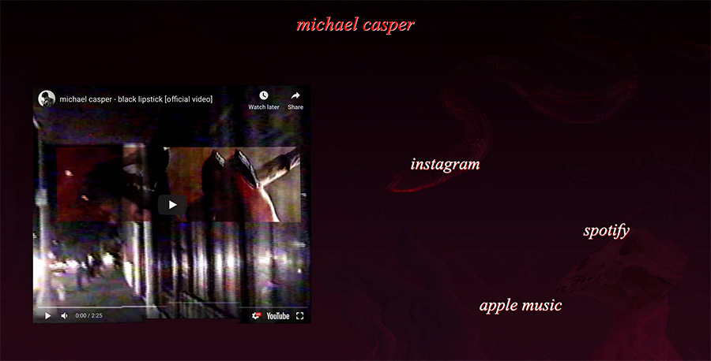

I co-directed the music video for Michael’s recent release, Black Lipstick, alongside Nick Scully and Eddie Mandell. I shot all of the digital footage, color graded, and edited the video in full. Our goal was to pay homage to 2000s skate videos while also building the narrative in a way that channeled the same gritty, longing feelings Michael had when writing the song.
I designed and developed 1800casket4two.com, Michael’s website, as a platform for him to engage with fans, the public, and the industry. Invoking the aesthetic of raw MySpace blogs of over a decade ago, Michael’s website serves as a simple and expressive dashboard to hold press kits, links to social media, and, most importantly, his videos and music.
Throughout Michael’s last few releases, I worked alongside Eddie Mandell to develop a repertoire of press photos and collateral images. We both conceptualized and shot for these releases; Eddie handled the final album artwork, and I took care of the press kits.